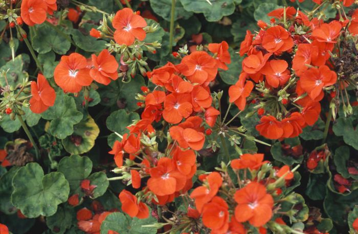
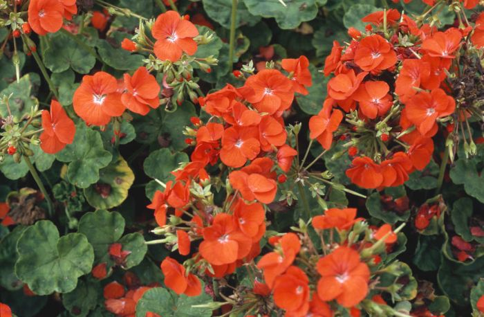

Common Name: Geranium, 天竺葵
Botanical Name: pelargoniums
 

Other references
RHS
Gardeners' World
mr-fothergills
Yougarden
Gardeners' World
Gardenia
One of the best series of geraniums available with a profusion of blooms in an array of bright and vibrant colours all summer long. Easy to grow, drought tolerant and trouble free, these fantastic plants are great garden performers thriving in beds, borders, hanging baskets and patio containers.
Geraniums (also known as pelargoniums) are popular bedding plants, providing a burst of colour or fragrance throughout summer. They’re easy to grow and thrive in terracotta pots as well as traditional bedding displays. They work well planted or their own or combined with other plants such as lavender and nemesia. Some types of geranium are perfect for growing in hanging baskets.
As well as offering beautiful blooms, some geraniums, known as scented-leaf geraniums, have fragrant leaves. Choose from apple, orange, lemon, spice or lavender. They’re often sold as herbs as the leaves are edible.